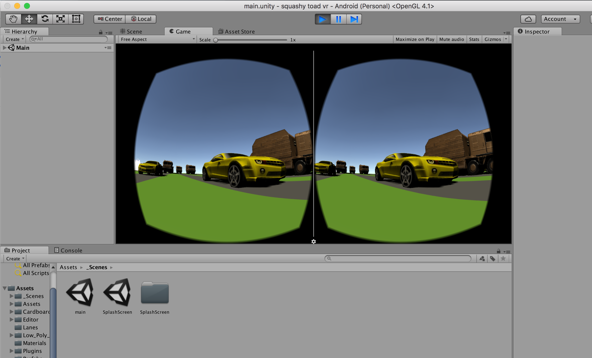
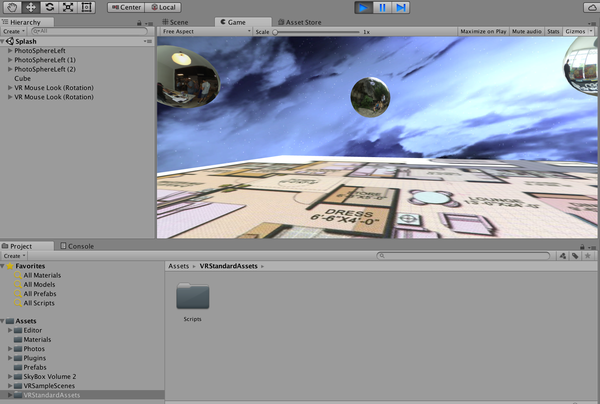

I created this VR Cardboard game as part of a tutorial to learn how to code in Unity. I followed Ben Tristem's Unity tutorial on Udemy and then added my own personal touches, such as the camaros and rusted trucks. I also implemented a novel feature that allowed the player to jump forward in the game by jumping up and down in real life. In order to do this I had to monitor the phone's accelerometers to detect jump movements. This was my first VR project, and I really learned a lot about game design, UI, and VR interaction. I also learned about the interaction between Unity and Android for mobile gaming. I've since used what I've learned through this game to create more VR demos to explore novel methods for VR locomotion, as well as the potential for VR in various industries.  